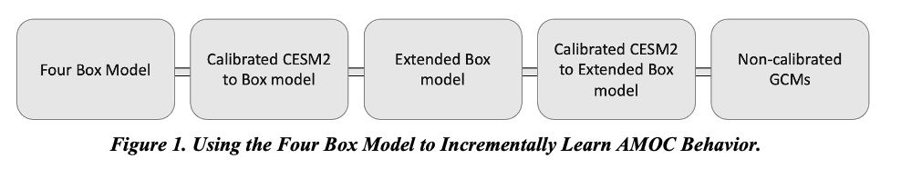
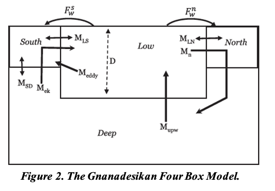
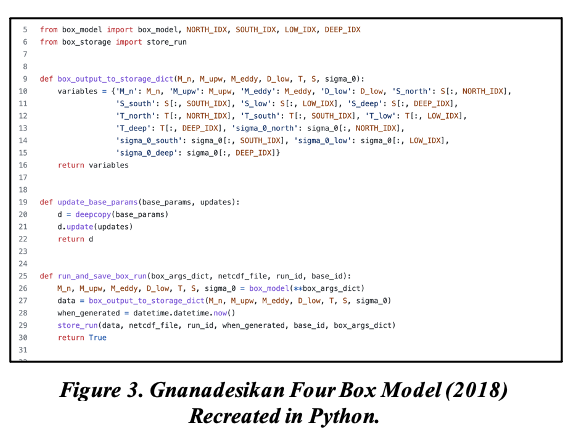
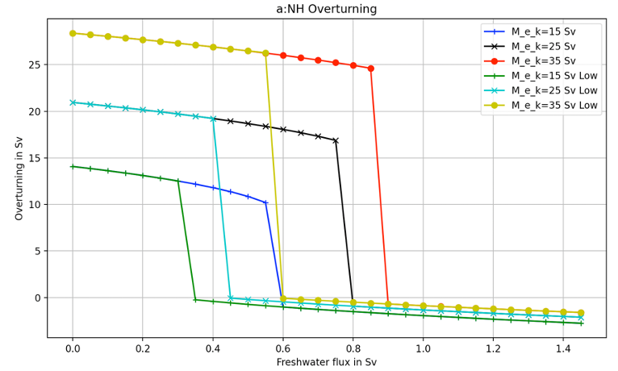
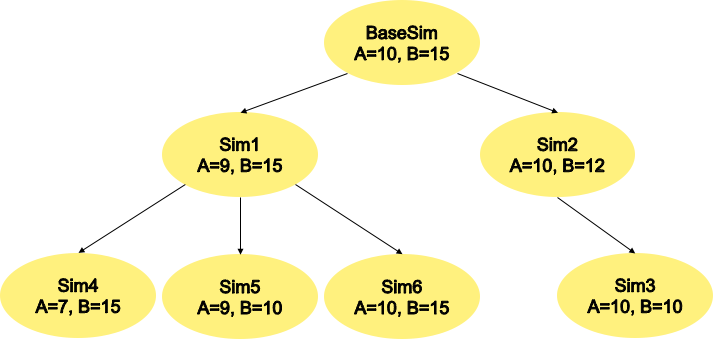
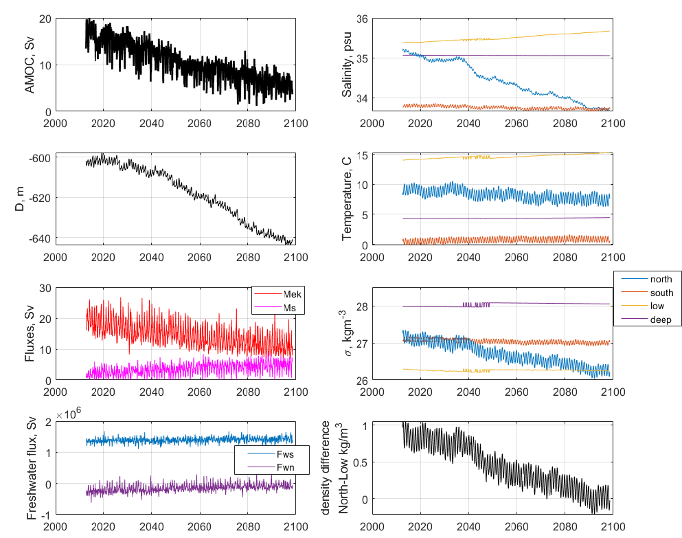
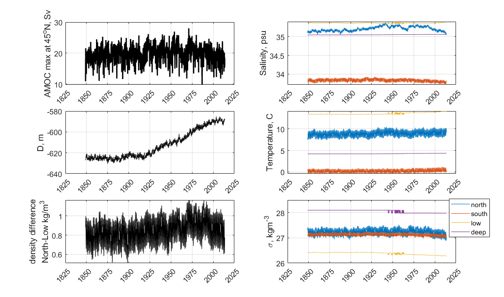
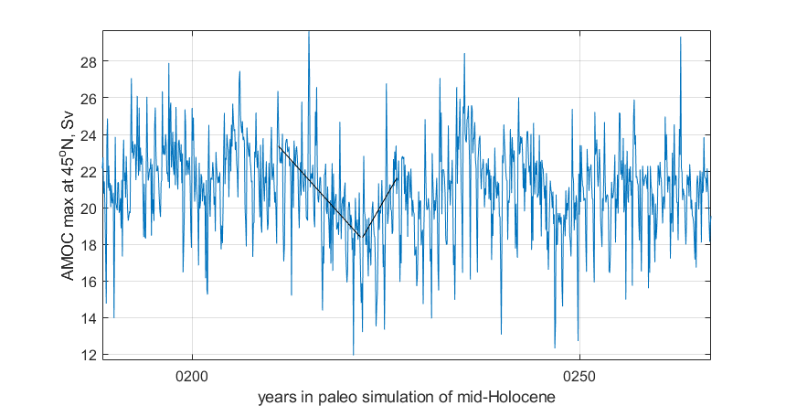
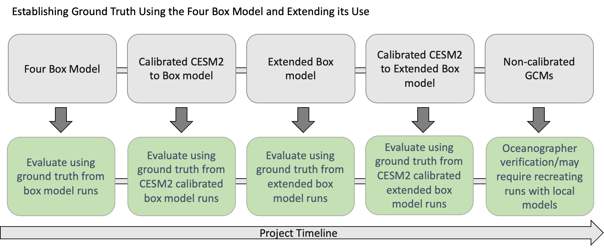
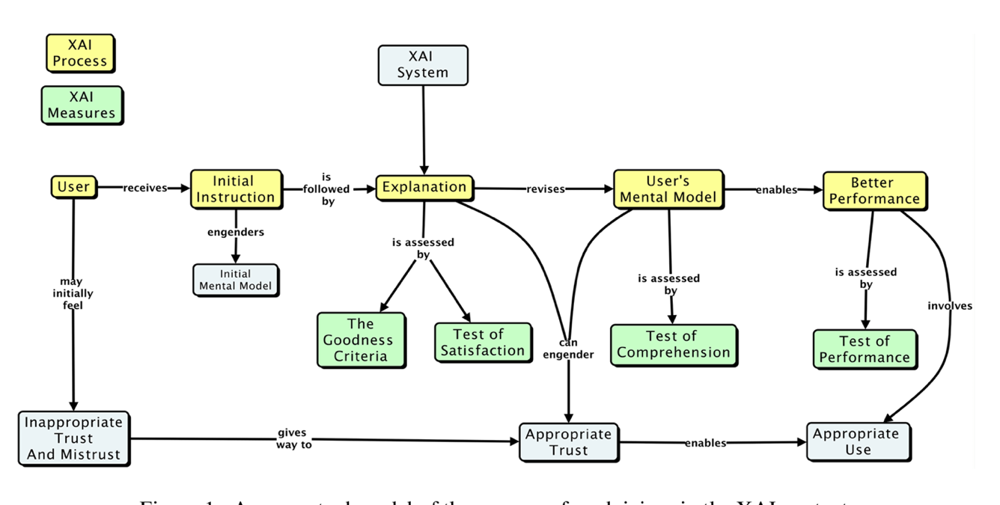

Milestone 3 Progress Report
Report on Metrics to be Used to Compare the Benefits of Hybrid Models Over Conventional Models
PACMANS TEAM: • Jennifer Sleeman (JHU APL) PI • Anand Gnanadesikan (JHU) Co-PI • Yannis Kevrekidis (JHU) Co-PI • Jay Brett (JHU APL) • David Chung (JHU APL) • Chace Ashcraft (JHU APL) • Thomas Haine (JHU) • Marie-Aude Pradal (JHU) • Renske Gelderloos (JHU) • Caroline Tang (DUKE) • Anshu Saksena (JHU APL) • Larry White (JHU APL) • Marisa Hughes (JHU APL)
1 Overview
This technical report covers the period of February 2022 through April 13, 2022. The report documents the achievement of the milestone associated with Month 4 of the JHU/APL-led PACMAN team’s statement of work.
2 Goals and Impact
The goals for this milestone include CMIP data wrangling and dataset delivery, and a report describing the metrics used for the hybrid methods in terms of accuracy, physical consistency, reproducibility, and consistency. As part of this milestone, we are providing both the tools and datasets that will be used to train the AI surrogate models and the AI simulation. We will also begin collaborating with the other teams working on the AMOC tipping point problem including the Exeter/Waterloo group. We have started a Slack channel for sharing information pertaining to using the data and using the data generation tools we have developed. We will hold tutorials with teams, as needed, and will encourage other non-AMOC teams to take a similar approach with the goal of developing a suite of tools and datasets across a variety of tipping points.
3 Task 2. Global Climate Models
Subtask 2.2. CMIP Data Wrangling and Dataset Delivery Preparation.
This task defines the CMIP data wrangling efforts which will support dataset generation for the purpose of training the AI surrogate models and the AI simulation GAN. As previously described, we made an early decision to use the Gnanadesikan four box model as a starting point for data generation that would be used to both train and validate the AI models. Taking this approach has enabled us to build the AI surrogates and the AI simulation simultaneously. It also has allowed us to focus initially on the architectures rather than the complexity of the GCM full data domain. The Gnanadesikan four box model enables controlled simulations of AMOC shutoff behavior that can be detected using a fold bifurcation method. As part of this effort, we have developed a full suite of tools for AI dataset generation in Python.
In addition to this effort, part of this milestone includes the first dataset based on the Community Earth System Model, CESM2. This model has been shown to have a significant weakening of the AMOC in response to a warming climate. To build a controlled CESM2 dataset for the AI models, the CESM2 data extraction has been calibrated to the Gnanadesikan four box model in that the CESM2 diagnostics have been extracted that correspond to the box model. This has enabled us to a) reduce the complexity of the CESM2 data generation, b) better understand AMOC behavior present in the CESM2 data, and c) create the same initial conditions and parameter values in the box model to both test validity and to run the model past the cut-off timestep in CESM2 runs to test for AMOC shut-off or collapse. As part of this milestone, in addition to the Gnanadesikan four box model Python data generation tools, we will also provide a data generation tool for CESM2 written in Matlab (v1). Python tools for CESM2 data generation, preferably generalized for multiple models taking part in the CMIP experiments, are being developed and will be delivered as part of milestone 5.
Both of these efforts are supporting our goal of applying our AI simulation method to large GCMs to discover new insight into AMOC tipping points, either weakenings or complete shut-offs, as shown in Figure 1. We believe that through this exploration, we will better understand both AMOC collapse avoidance measures and AMOC collapse recovery.
Gnanadesikan Box Model DataSets and Tools
{kind=link}
As mentioned in the milestone 2 report, the Gnanadesikan four box model is a simple dynamical model that includes southern, low latitude, and northern surface boxes and one deep box as shown in Figure 2. The model and experiments that explore AMOC shut-off were published in (Gnanadesikan 2018) and the tools for recreating these experiments were written in Matlab. As part of the milestone 3 delivery, our team has developed a set of tools based on the Gnanadesikan four box model for data generation. Specifically, we have developed a Python version of the Matlab four box model that allows one to specify initial conditions, and parameter values. A highlight of this code is shown in Figure 3. The Python package recreates the Gnanadesikan experiments contained in the Matlab code and generates the same plots as shown in Figure 4, where overturning behavior is visualized.
{kind=link}
{kind=link}
We use this tool to create the datasets we will use for training both the AI surrogates/bifurcation and the GAN. We are also using this dataset to explore building the neuro-symbolic language and the causal model. The dataset is generated as both a labeled dataset and a temporal dataset. The data generation process is flexible in terms of output with netcdf as the current format.
{kind=link}
The tool also allows for grid-like data generation across the parameter space over the ranges of all 24 parameters. It starts from a base simulation with initial conditions and generates child simulations representing perturbed parameters sets, where a different parameter is choosen per run. The relationship between perturbed runs is captured through the naming convention of the data. An example of this structure is shown in Figure 5, where child simulations are based on a parent simulation for which a parameter is perturbed. We will use this structure to support training the GAN and evaluating what it learns as output. This structure intentionally covers the full parameter space, so at each node in the tree, a single parameter is perturbed and a perturbed value may or may not result in an AMOC shut-off. The result of a simulation run will include an attribute, ‘mode_shift_detected’, which acts as a label for the run indicating whether a shut-off is reached or not. Labeling was achieved by identifying when northern hemisphere overturning (M_n) crossed 0. List of time steps where the criteria was met (variably sized).
{kind=link}
CESM2 DataSets and Tools
CESM2 is a global, coupled atmosphere-ocean general circulation model that has participated in the Coupled Model Intercomparison Project, version 6 (CMIP-6), including the forward climate scenario, ocean, and paleoclimate experiments. The results are publicly available, archived at cmip6 Data Search | cmip6 | ESGF-CoG (llnl.gov). In addition, a variety of pre-industrial runs with varied AMOC strengths are available through NCAR’s archive at Earth System Grid (Dataset: CESM2 LENS Ocean Post Processed Data Monthly Averages (earthsystemgrid.org)). Initial data wrangling includes processing 4-dimensional ocean variables of temperature, salinity, and velocity (4GB/decade) into zonal-mean (3-dimensional) temperature, salinity, potential density, and velocity (150MB/decade). These zonal-mean variables are then processed into 1-dimensional time series (50kB/decade) that are parallel to those created by the Atlantic box model (Gnanadesikan 2018). This includes the spatial-mean temperature, salinity, and potential density in 4 Atlantic sub-regions, the pycnocline depth, the overturning flux in the northern and southern high latitudes where deep water is formed, the Ekman flux from the Southern Ocean northward, and the freshwater fluxes between regions. Combined with the fixed parameters used in CESM2 for diffusivities and an estimate of the time constant for the northern high-latitude near-surface box, the results are monthly data and fixed parameters that could be input to the box model to estimate an equilibrium ocean state. These data include the transient response to fluctuations in ocean state and atmospheric forcing, and a noticeable seasonal cycle as shown in Figures 6 (forward scenario SSP1-2.6) and 7 (historical run 1850-2014).
Figure 6 demonstrates the applicability of the box model for the CESM2 data. The changes in AMOC strength (top left), pycnocline depth (just below AMOC), meridional density difference (difference between northern and low-latitude boxes, bottom right), and salinity in the northern box (top right, blue) are correlated. In the box model, these have the same relationship: freshening of the northern box reduces its density, leading to a reduction in the meridional density difference, a deeper pycnocline, and a weaker AMOC. The box model has a shutoff of AMOC when the meridional density difference is zero, and reverses if it is negative. That state is reached around 2085 for summer months, but winter months, when deep water formation occurs, still have a positive density difference, and the AMOC is about 25% of its preindustrial strength which is a larger change than any observed in the pre-industrial or historical runs for this model.
 {kind=link}
{kind=link}
In the search for AMOC shut-offs in CESM2 data, we have also examined the paleoclimate runs performed for PMIP. No very weak AMOC state is identified that persists for multiple years. However, the decadal variability levels in these long (700-year) simulations may be useful for determining whether AMOC weakenings, as seen in the forward scenario, are likely leading to tipping points rather than recoveries. An example is shown in Figure 8: 10-20% shifts in AMOC strength are seen, both positive and negative, over decadal timescales. Using the tools built for this milestone, we will be able to add these cases to our dataset and study them further.
{kind=link}
4 Task 5. Evaluation Final Report
Subtask 5.1. Report on metrics in terms of accuracy, physical consistency, reproducibility, and consistency
Box Model for Consistency and Reproducibility
In Figure 9, we show how ground truth will be established in order to evaluate the AI simulation. As we move from left to right, we show the project progression, the number of parameters increases, the number of outcomes increases, eventually moving towards realistic full GCM model runs. As shown, these non-calibrated models will be used after we have established a strong sense of system performance. When we apply the AI simulation to non-calibrated GCMs, we will use the climate modeling experts of our team to evaluate the results of these runs. The climate modeling experts will run in-house models and will perform analysis on the results to achieve an empirical evaluation of the AI simulations.
{kind=link}
The Gnanadesikan Four Box Model is used to better understand both AMOC on/off states over time and to generate the initial dataset for validation of the AI models. Model configurations discovered by the GAN that led to a AMOC shut-off can be reproduced using the box model.
In addition, the model calibration can be performed and used to validate CESM2 model runs that indicate weakening of the AMOC. By recreating the CESM2 model configurations in the box model, the box model can be run beyond the last timestep in the CEMS2 model. When an AMOC shut-off is not present in the CESM2 model but weakening is observed, the box model can be used to determine if the state of the model in the presence of a weakening would result in a shut-off.
Model calibration can be further extended against other climate models. Using this approach, we will be able to capture both mean state and variability.
Future box model improvements will seek to increase the dynamics included in the model and potentially the boundaries. For example, the box model can be extended to include the Pacific Basin and to include the seasonal cycle.
The box model enables evaluating what is learned by the AI components in a consistent and reproducible way. As we move away from the box model surrogate to the GCMs, the calibrated versions will be evaluated using the box model to confirm expected outcomes. The uncalibrated models will be used as a “model-in-the-wild”, as we will not have “ground truth”. When we run a “model-in-the-wild”, we will use our in-house expertise to validate the outcomes. We will want to explore these models only when the AI simulation passes the other evaluations. When we get to the point of running a “model-in-the-wild”, our objective will be to discover new AMOC behavior.
Evaluation of AI Surrogates and Bifurcation
The performance of surrogate models in estimating/predicting tipping point/escape probabilities is measured in comparison to the full model simulation. It is performed in two ways:
by direct simulation (when multiple random perturbation scenarios are simulated
with the full model, and then also simulated by the surrogate model) to escape until the probability distribution of escape times visually/approximately converges.
for a low-dimensional enough targeted surrogate model in the neighborhood of a tipping point, one can approximate the distribution of tipping times by solving a PDE for the escape time distribution itself.
In both cases, the evaluation combines (a) the cost of running the full model versus the cost of running the reduced one and (b) the evaluation of the difference of the two escape time distributions after convergence (i.e., of the accuracy of the surrogate model).
In the early stages of experimentation, we will develop surrogates based on the box model. As we progress, we will work towards building surrogates of the full GCM models.
Evaluation of Multi-Agent GAN
The GAN architecture is described by two deep neural networks, one which learns a supervised model and the other which learns an unsupervised model.
We will evaluate the unsupervised part of the GAN (the generators which are learning a latent space) using multiple metrics. The first metric will be a qualitative measure of performance. In this measure, we will evaluate how the generators learned different modalities of the distribution.
Since we are building a multi-class discriminator GAN, the discriminator will learn a classification model classifying configurations as shut-off or non-shut-off initially, and eventually will perform classifications in terms of shut-off, weakening, strengthening and potentially more fine-grained classifications. The discriminator will learn how to predict these outcomes given the input. We will use the box model generated data to evaluate this method in terms of accurately predicted whether a given set of initial conditions, and parameter configuration will or will not lead to a shut-off. We will initially use a standard machine learning measure of accuracy for the classification as we will have a 2-class or binary classification setup. Accuracy is calculated with respect to the true positive (TP), true negative (TN), false positive (FP), false negative (FN) classifications, as seen below.
As classifications move to a multi-class setup, we will measure classification performance in terms of precision (P), recall (R), and F-Measure (F1) which provides are more granular understanding of the classification performance.
. . math:: P = frac {text{TP}}{TP + FP} |
. . math:: R = frac {text{TP}}{TP + FN} |
\[F1 = \
\frac{2*P*R}{P + R}\]
|
As we incorporate the neuro-symbolic model into the simulation, measures of performance will change. As we develop the models further, we will report on these changes.
Evaluation of Neuro-Symbolic Model
The neuro-symbolic model will need to be evaluated independently from the other parts of the AI simulation. In this evaluation, we will measure the effectiveness of the language and its representation. We will measure how we structurally represent the constituents of the domain in terms of performance and in terms of representativeness.
To evaluate the effectiveness of using the neuro-symbolic model, we will run the GAN with and without the neuro-symbolic model as part of the workflow. We will measure the downstream task of causality and explainability in terms of this comparison.
In addition, we will measure the effectiveness of the language in support of question answering of the model. Representation of questions and answers will be fundamental in linking these into the AI-learned causal model.
The neuro-symbolic language will initially use the structurally represented graphs based on the Four Box model as the problem domain and a set of questions that imply potential causes of AMOC shut-off. This is be the basis for developing the model and evaluating its effectiveness. As we progress, the structure of this model will also be further developed based on the calibrated CESM2 model and eventually a large uncalibrated GCM.
Measuring Explainability and Causality of Final Learned Latent Space
As outlined in the publication (Hoffman 2018) which formalized explainability metrics shown in Figure 10, explainability will be measured roughly in terms of the described AI Explainability (XAI) measures.
{kind=link}
The causal model that results from the AI simulation will be evaluated based on four measures: goodness criteria, satisfaction, comprehension, and performance and are outlined below.
Goodness criteria – addresses factors such as clarity and precision in terms of conclusions
Satisfaction – modeler understandability of the resulting causal model and the conclusions obtained
Comprehension – is the resulting model understandable and can the modeler comprehend both the conclusions and the pathways which lead to the conclusions
Performance – is one able to ask questions of the resulting model and does the approach scale to large GCM model runs
5 PACMANS Website, Documentation, Datasets and Source Code
The PACMANS website will be hosted by Johns Hopkins University SciServer. It will contain a link to our documentation, datasets and source code. APL website development started. We will send an updated email when we have completed the website development.
Project Homepage
https://www.sciserver.org/public-data/PACMANS/ (Under construction - to be opened shortly.)
Source Code
Datasets
Currently available to DARPA on Github and will be transferred to SciServer and available on the project homepage when open.
6 Conclusion and Next Steps
The milestone 3 deliverables exhibit both our team’s commitment to developing a large-scale system that can be used for discovering tipping points and for building a collaborative approach in working with other performers on the team. By building a scalable approach to modeling the problem, with a clear early start developing ground truth datasets that can be used for deep learning model, we enable both time for developing the research and for better understanding the behavior of the AMOC. This approach will better inform how this AI simulation could be built as a generalized approach applied to other climate tipping point phenomena.
Bibliography
Gnanadesikan, A., R. Kelson and M. Sten, Flux correction and overturning stability: Insights from a dynamical box model, J. Climate, 31, 9335-9350, https://doi.org/10.1175/JCLI-D-18-0388.1, (2018).
Stommel, H. Thermohaline convection with two stable regimes of flow. Tellus 13, 224–230 (1961).
Sgubin, Giovanni, Didier Swingedouw, Sybren Drijfhout, Yannick Mary, and Amine Bennabi. “Abrupt cooling over the North Atlantic in modern climate models.” Nature Communications 8, no. 1 (2017): 1-12.
Rodgers, Keith B., Sun-Seon Lee, Nan Rosenbloom, Axel Timmermann, Gokhan Danabasoglu, Clara Deser, Jim Edwards et al. “Ubiquity of human-induced changes in climate variability.” Earth System Dynamics 12, no. 4 (2021): 1393-1411.
Goodfellow, Ian, Jean Pouget-Abadie, Mehdi Mirza, Bing Xu, David Warde-Farley, Sherjil Ozair, Aaron Courville, and Yoshua Bengio. “Generative adversarial nets.” Advances in neural information processing systems 27 (2014).
Hoang, Quan, Tu Dinh Nguyen, Trung Le, and Dinh Phung. “MGAN: Training generative adversarial nets with multiple generators.” In International conference on learning representations. 2018.
Li, Wei, Zhixuan Liang, Julian Neuman, Jinlin Chen, and Xiaohui Cui. “Multi-generator GAN learning disconnected manifolds with mutual information.” Knowledge-Based Systems 212 (2021): 106513.
Hoffman, Robert R., Shane T. Mueller, Gary Klein, and Jordan Litman. “Metrics for explainable AI: Challenges and prospects.” arXiv preprint arXiv:1812.04608 (2018).